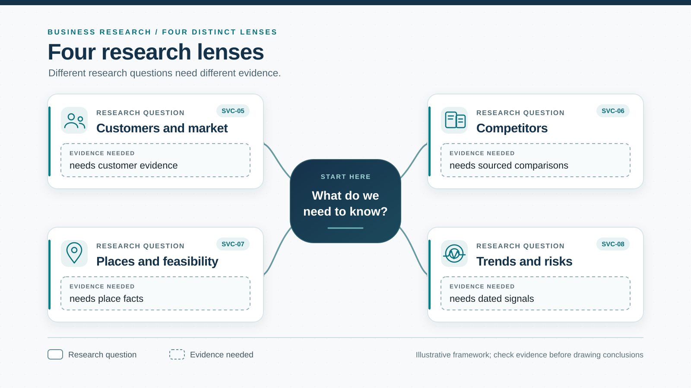

Your customers and their buying decisions
Who is most likely to buy, what matters to them and what questions or concerns influence their choice.
Market, Customer & Competitive Intelligence
Understand who you want to serve, which alternatives customers consider and where your business could focus. BGI Solution provides research and analysis to help you evaluate customer needs, differentiation options, geographic opportunities and changes outside your business.
Tell us the decision you need to make and what you already know. We agree the question, approach and outputs before work starts.
Who is most likely to buy, what matters to them and what questions or concerns influence their choice.
Which alternatives customers consider, how offers compare and which differences your business can support with evidence.
Which areas deserve closer attention, based on demand, competition and the practical requirements of serving them.
Which trends, technologies and risks matter to your decisions and what signals are worth monitoring.
You can start with one research area or combine relevant work. The question, evidence and agreed scope determine the approach.

Market & Customer Intelligence
Use this service to identify the customer groups and market segments most relevant to your business. We examine needs, buying situations, what prompts a decision and objections that can delay a purchase.
Possible outputs explain who the audience is and how buying decisions take shape:
Findings identify evidence gaps as well as supported conclusions. The scope states which existing information will be reviewed and whether new information collection is needed. Methods and depth are agreed before work starts.
Competitive Intelligence & Differentiation Strategy
Use this service to understand the alternatives your customers may consider and decide which differences to emphasize. We compare relevant offers, positioning and customer experience, then work through strategic options within the agreed brief.
Possible outputs connect the comparison to choices your business can evaluate:
Any proposed difference needs to match what your business can deliver. The scope identifies which differentiation strategy work is included; message testing, production and implementation are specified separately when needed.
Local Market & Geographic Growth Intelligence
Use this service when deciding where to focus or whether to investigate expansion. We agree the areas and criteria, then review demand indicators, competitive conditions, delivery feasibility and limits in the available information.
Possible outputs show how the areas compare and what to investigate next:
The findings support your geographic decision and identify remaining feasibility checks. Any market entry or regional marketing work must be agreed separately.
Trend, Technology & Business Risk Intelligence
Use this service when changes outside the business could affect your plans. We review relevant trends, technologies and business risks, assess the strength of the evidence and explain possible implications.
Possible outputs organize the evidence and define what deserves further attention:
The brief states the research period and any agreed follow-up. A set of monitoring priorities explains what to watch; continuing monitoring requires its own defined scope. Findings keep evidence, interpretation and uncertainty clear.
The agreed outputs explain the evidence behind the findings and how it relates to your decision. We make the following points clear.
We identify each source, its publication or collection date, the period it describes and the audiences or markets covered. This helps you judge whether the information fits the decision. Important limits in coverage are recorded.
We distinguish evidence from interpretation and explain how relevance, coverage and important gaps affect confidence. Estimates and assumptions are identified so they can be reviewed alongside the findings.
We explain how a finding relates to your question, which options it raises and what still needs validation before action.
A business is considering which customer group to focus on. Profiles could organize the available evidence about needs and buying situations. Decision maps could identify questions and objections that need attention. Those findings could inform a separately agreed offer or content project.
A business wants to compare two potential markets. Geographic research could organize demand indicators, competitive conditions and delivery requirements using agreed criteria. The comparison could highlight evidence gaps and further checks needed to make the geographic decision.
We define the question, deliverables, sources, responsibilities, price, expected schedule and review points. Start by describing the decision, what you already know and any existing research. We discuss which records or access are necessary before you share business information.
Customer research examines who you want to serve and how they choose. Competitive intelligence examines alternatives and differentiation. Geographic research compares places. Trend and risk intelligence examines relevant external changes. Start with the question behind your decision; related work can be combined in an agreed scope.
Tell us what exists, when it was prepared and what decision it addressed. We review its relevance, coverage and limitations as part of the agreed work. Any further research or new information collection is identified in the scope.
We can discuss a comparison of areas you are considering. We agree the criteria and examine available evidence and feasibility. Findings identify further checks needed before a market-entry decision.
No. Each service addresses a different research question. You can discuss one area or combine relevant work. Any additional service is explained and agreed before it is added.
We record source dates, coverage and important limitations. Findings remain preliminary where evidence is weak or no longer fits the decision. We explain which questions the information can support and what further investigation may be needed.
The competitive service can include differentiation strategy within its agreed brief. A full growth roadmap, production or implementation requires an explicit scope. The proposal also states whether ongoing monitoring is included and who is responsible.
Share the customer, competitor, market or external change you want to investigate. Tell us what you already know and which decision the findings need to support. We can discuss a useful research question and the work it requires.